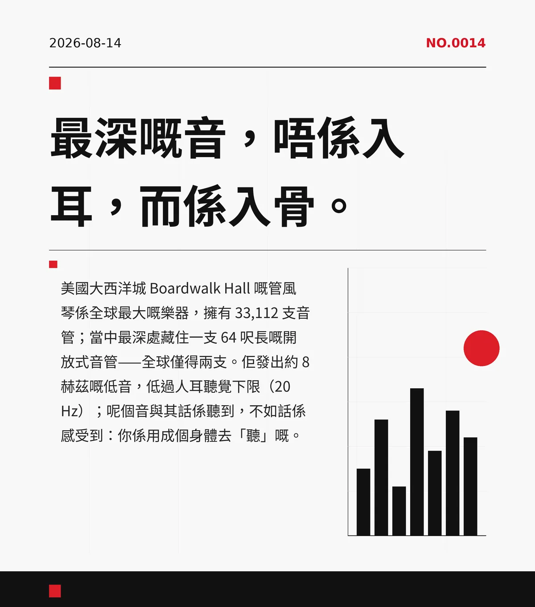

最深嘅音，唔係入耳，而係入骨。
美國大西洋城 Boardwalk Hall 嘅管風琴係全球最大嘅樂器，擁有 33,112 支音管；當中最深處藏住一支 64 呎長嘅開放式音管——全球僅得兩支。佢發出約 8 赫茲嘅低音，低過人耳聽覺下限（20 Hz）；呢個音與其話係聽到，不如話係感受到：你係用成個身體去「聽」嘅。
c9044cb6c2de58a8
冷知识由执笔的模型自行查证。逐条断言、来源与所引原句存档在纯文字副本里，未经程序逐字校验，留作事后核实。